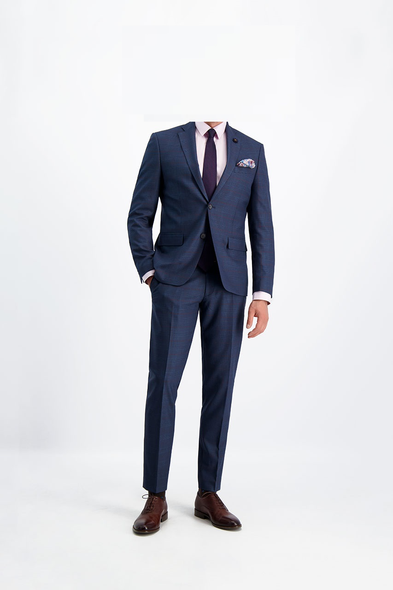

Strój uczniowski: 
- garnitur o klasycznym kroju (jedno- lub dwurzędowy z kamizelką lub bez), wykonany z jednolitego granatowego materiału bez wzorów,
- biała koszula bez wzorów z długim lub krótkim rękawem,
- granatowy krawat bez wzorów,
- brązowe wizytowe półbuty,
- czarne skarpety,
- obowiązkowym elementem stroju uczniowskiego jest tarcza szkolna wpinana w lewą klapę marynarki;